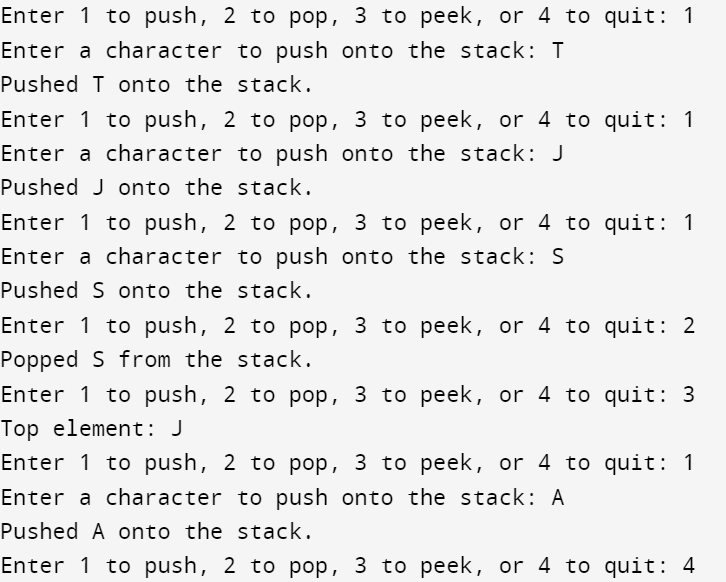

#include <stdio.h>
#include <stdbool.h>
#define MAX_SIZE 100
char stack[MAX_SIZE];
int top = -1;
// Check if the stack is empty
bool isEmpty() {
return top == -1;
}
// Check if the stack is full
bool isFull() {
return top == MAX_SIZE - 1;
}
// Push an element onto the stack
void push(char value) {
if (isFull()) {
printf("Stack is full. Cannot push.\n");
} else {
stack[++top] = value;
printf("Pushed %c onto the stack.\n", value);
}
}
// Pop the top element from the stack
char pop() {
if (isEmpty()) {
printf("Stack is empty. Cannot pop.\n");
return '\0'; // Return a null character to indicate an error
} else {
char value = stack[top--];
printf("Popped %c from the stack.\n", value);
return value;
}
}
// Peek at the top element of the stack without removing it
char peek() {
if (isEmpty()) {
printf("Stack is empty. Cannot peek.\n");
return '\0'; // Return a null character to indicate an error
} else {
printf("Top element: %c\n", stack[top]);
return stack[top];
}
}
int main() {
char choice;
char value;
while (1) {
printf("Enter 1 to push, 2 to pop, 3 to peek, or 4 to quit: ");
scanf(" %c", &choice);
switch (choice) {
case '1':
printf("Enter a character to push onto the stack: ");
scanf(" %c", &value);
push(value);
break;
case '2':
pop();
break;
case '3':
peek();
break;
case '4':
return 0;
default:
printf("Invalid choice. Please try again.\n");
}
}
return 0;
}
Output:
